Preprocessing#
TL;DR#
The preprocessor_gui.py provides a graphical user interface for common preprocessing operations such as filtering or the creation of masks for template matching. After installation as outlined in the GUI Setup, you can launch it via:
preprocessor_gui.py
Users that aim to perform these operations programmatically can do so via tme.density.Density, tme.preprocessor.Preprocessor, tme.matching_utils.create_mask(). For further details refer to Practical Example.
Aim#
Cross-correlation based template matching is only as good as the data allows it to be. Often times, cross-correlation will result in erroneous matches, although the correct result is evident by eye. Notably, this is not because cross-correlation is a particularly bad similarity metric, but rather owed to the excellent template matching capacity and exponential escalation of the human mind.
Nevertheless, we can preprocess our data to guide cross-correlation based template matching in the right direction using techniques outliens in the following sections. With preprocessing, we aim to improve template matching accuracy, by increasing the cross-correlation score given to true positive instances of the template, while decreasing the cross-correlation score of false positives.
Background#
In order to understand which factors to focus on during preprocessing, we have to take a schematic look at the computation of the normalized cross-correlation
\(x\) represents the non-normalized cross-correlation between the target and the template.
\(\mu\) represents the non-normalized cross-correlation between the target and a mask.
\(\sigma\) represents the variance in non-normalized cross-correlation between the target and a mask.
\(score\) represents the normalized cross-correlation which is clipped between zero and one, with one being a perfect match.
Based on this schematic assessment, we can influence the normalized cross-correlation score through two principal approaches:
Apply filters to improve the similarity between the template and template instances in the target.
Design a mask that provides a faithful approximation of the cross-correlation background given the template.
These preprocessing approaches will be discussed in the following sections. For a mathematically more rigorous treatment of the normalized cross-correlation we refer the reader to [1].
Filtering Use Cases#
The goal of preprocessing is to improve the similarity between the template and template instances in the target. This should result in a better detection and in turn a higher precision of the template matching procedure. In the following we focus on two particular applications of filters:
to remove noise from the data.
to emphasize particular components of the data.
Let us better understand these applications through a practical template matching example using the target (left) and template (right) displayed below. Typically template matching also involves evaluating the similarity of different rotations of the template, which we omit because it is not necessary in order to understand the preprocessing concepts.
(Source code, png, hires.png, pdf)
{kind=link}
{kind=link}
Template matching data used in this guide.#
Noise Removal#
Real-world data often contain noise, arising from varied sources like sensor imperfections, environmental conditions, or the intricacies of the image acquisition process. This noise can obscure or distort the features of the image that are essential for accurate template matching. Filters are instrumental in mitigating the impact of noise. Filters allow us to reduce the amount of noise. In the following, we explore the impact of two common types of noise: Gaussian and salt-and-pepper (S&P). We then compare the template matching scores with and without the application of appropriate filters before template matching. The template itself remains unchanged.
(Source code, png, hires.png, pdf)
{kind=link}
{kind=link}
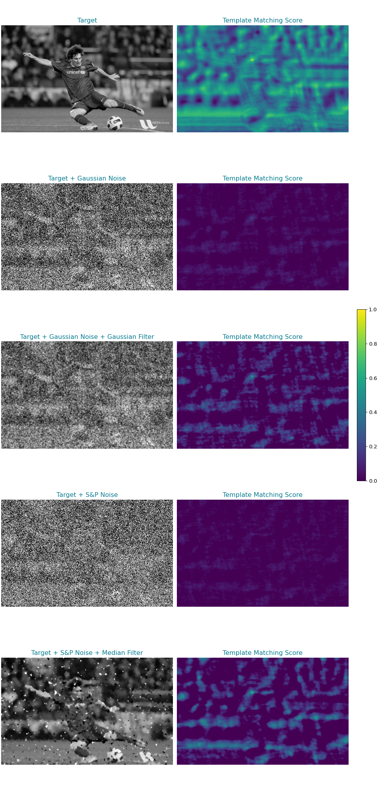
Assessment of different filters for noise removal prior to template matching.#
Note
The normalized cross-correlation score of pixels close to boundaries are often elevated. This is a common artifact since these areas do not allow for cross-correlation computation using the entire template, they can be masked. Alternatively postprocess.py (see Postprocessing) has a min_boundary_distance flag, that disregrads peaks in this area.
When the target image is infused with noise, the template matching score around the true positive position (where the template is expected to match accurately) is notably lower. This decrease in the matching score is indicative of the noise interfering with the ability to find correct matches in the target image. The presence of noise essentially masks or distorts the features that the template is designed to detect, leading to a reduced confidence in identifying the correct location. Furthermore, the presence of noise introduces additional bias, such as erroneous peaks in the template matching score. These peaks are not present in the original, noise-free image, and potentially result in the detection of false positives. In other words, the template might incorrectly identify parts of the noisy image as matches, even though these areas do not actually resemble the template.
When applying appropriate filters to the noisy data, the template matching score around the true positive position is elevated and erroneous peaks are suppressed, reducing the likelihood of false positives. The filtering process helps in smoothing out the noise, thereby reducing its impact.
Conclusively, effective noise reduction through filtering can significantly enhance template matching performance. However, it’s pivotal to recognize the complexity of noise in images, often a mix of different types. While Gaussian filters are widely used and generally effective, exploring a variety of filters tailored to specific noise types can yield optimal results in noise reduction and template matching accuracy.
Note
This section was inspired by an OpenCV tutorial, which discusses template matching using different variations of the normalized cross-correlation coefficient.
Component Emphasis#
Building on our understanding of noise removal in preprocessing, we now shift our focus to emphasizing specific components within an image. After addressing noise with filters like Gaussian and median filters, the next step often involves highlighting or isolating particular features or structures in the data through frequency space operations. The Fourier transform is integral to understanding the algorithmic underpinning of template matching, which is futher discussed here.
The Fourier transform translates an image from real space into a spectrum of frequencies, each with a corresponding magnitude and phase, rather than intensities. The real space image (left) is decomposed into its constituent frequencies (right). The center of the Fourier-transformed image represents the zero frequency component, often referred to as the DC component, which signifies the average intensity of the image. As we move outward from the center, we encounter higher frequencies. Notably, all points on a given ellipse correspond to the same frequency, but differ in orientation. For input images with equal dimensions, i.e. square images, points of identical frequency would lie on a circle.
The distance from the center is directly proportional to the frequency magnitude: closer points represent lower frequencies (broad features), while farther points represent higher frequencies (fine details and noise). By selectively enhancing or suppressing specific frequency components, we can emphasize desired features or reduce undesirable noise in an image.
(Source code, png, hires.png, pdf)
{kind=link}
{kind=link}
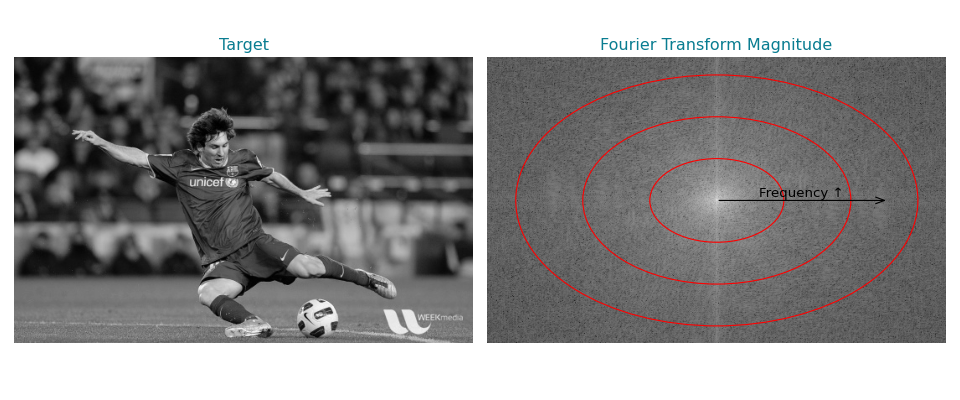
Introduction to the Fourier transform.#
In frequency domain image processing, filters like low-pass, high-pass, and bandpass serve as prototypical modulators, each uniquely altering the image’s frequency components.
Low-pass filters allow only the lower frequencies to pass through, effectively smoothing the image by removing finer details and high-frequency noise. This results in a focus on broader, general features of the image.
High-pass filters do the opposite by allowing only the higher frequencies to pass. They enhance fine details and edges, often at the expense of the general layout or broader features.
Bandpass filters offer a more selective approach, allowing a specific range of frequencies to pass. This specificity enables the isolation of features of particular sizes or the smoothing out of noise within a certain frequency band.
By multiplying the frequency components of an image using these filters, followed by an inverse Fourier Transform, we can precisely control how features of various scales are emphasized or suppressed. This process effectively translates the modifications made in the frequency domain back to the spatial domain.
Naturally, the emphasis on particular components has profound effects on the template matching score. The high-pass and band-pass filtered images exhibit sharp pronounced peaks and an overall reduction in the background scores. This is because the template matching score is dominated by low-frequency information, thus creating a situation in which overall template shape and size rather than structural detail drive the detection. For a more complete description and assessment of this phenomenon in the context of cryogenic electron tomography, we refer the reader to [2].
Note
Although the application of a filter is commutative in Fourier space, this does not hold for the mask that normalizes the cross-correlation coefficient. Therefore, if the goal is to have the filtering effect reflected in the normalization procedure, the filter needs to be applied to the target.
The possibilities of defining filters in Fourier space is quasi-unlimited and can include far more intricate or periodic filters, such as tilt weighting for tomography or contrast transfer functions (CTF).
To showcase another possibility of placing emphasis on particular image components, we take a look at spectral whitening, which is particulary useful when analyzing large heterogeneous datasets, because the assumptions made are fairly weak. Although neither new nor specific to cryogenic electron microscopy, spectral whitening is a fairly popular [3] [4] approach and graphically explained here. Briefly, spectral whitening normalizes each frequency by dividing the amplitude of each frequency by its magnitude. This can bring out subtle features that might be overshadowed otherwise [2]. In the context of template matching, we can enforce a more similar frequency composition of template and target, thus reducing bias towards certain frequency ranges. This in turn results in a sharp peak in template matching score around the true positive location and a reduction in background scores compared to the unfiltered template matching scores.
{kind=link}
(Source code, png, hires.png, pdf)
{kind=link}
{kind=link}
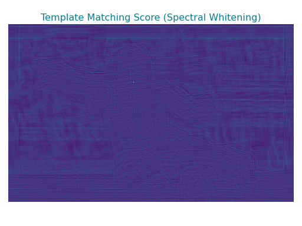
Influence of spectral whitening on template matching scores.#
Mask Design#
As outlined in equation 1, the mask is pivotal for the normalization of the cross-correlation coefficient. The composition of an optimal mask is problem-specific, but we recommend the following when designing masks:
The mask should focus on conserved key features.
Consider the context in which the mask will be applied. Particularly for in situ images, crowdedness can be problematic if the mask is excessively large.
Sharp transitions or edge effects should be avoided by smoothing or sufficiently sized boxes.
To build intuition towards mask design, let us assess the effect of a range of binary masks outlined below. By default, the entire area under the template is considered as mask. While this results in a properly normalized cross-correlation coefficient, it comes with downfalls: 1.) The cross-correlation peak is wide, which is disadvantageous in crowded settings as it may lead to the obfuscation of peaks. 2.) The background score is high, which can yield false positive peaks. When focusing on defining features of the template using an ellipsoidal mask, i.e. eyes, nose and mouth, we observe a sharpening of the peak and a decrease in background score. However, if we make the mask too narrow, as illustrated by the last example, the mask no longer provides a faithful approximation of the cross-correlation background and as thus the template matching scores become uninformative.
(Source code, png, hires.png, pdf)
{kind=link}
{kind=link}
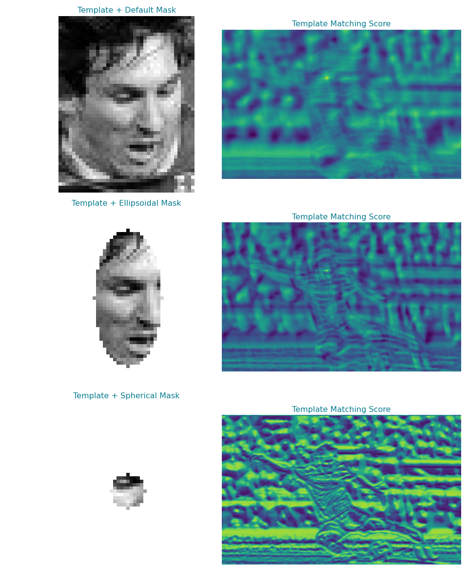
Influence of mask design on template matching scores.#
The applied ellipsoidal mask is a suitable choice in this case, because the mask recapitulates the defining features of a face well. Therefore, we also avoid sharp transition in template intensity that could adversely effect the template matching score computation. In the following we look at the effect of smoothing a suboptimal mask, that includes strong changes in intensity. For smoothing the mask, we apply a Gaussian filter that rounds the edges and provides a smoother intensity transition. Albeit difficult to see in this representation, smoothing the mask results in 5% higher peaks, compared to their individual backgrounds. Nevertheless, the benefit of smoothing masks is less obvious and has to be evaluated on a per-problem basis.
(Source code, png, hires.png, pdf)
{kind=link}
{kind=link}
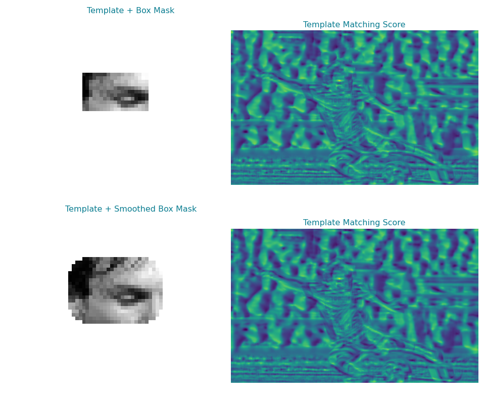
Influence of mask smoothing on template matching scores.#
Generally, the filtering procedure has greater impact on template matching performance than the choice of mask. In practice, it suffices to use a geometric object that recapitulates the size and shape of the template [2]. Examples from the literature include ellipsoids or spheres for ribosomes [3], cylinders for nucleasomes [6] or proteasomes [7] and boxes for membranes [8].
Noteably, the choice of mask does have an impact on the runtime performance of template matching. Rotation symmetric masks, or masks that encompass all possible rotations of the template do not need to be rotated during template matching, thus reducing the runtime by up to a factor of three.
Note
A more complete treatment of the mathematical implications of using different masks is provided in [5], together with explanatory slides. Alternatively, this OpenCV tutorial provides further examples on the effect of masking.
Practical Example#
The following elaborates how to perform preprocessing using the graphical user interface (GUI) and the application programming interface (API). While the GUI provides access to the most commonly used operations, the API gives access to all components of pytme for developers.
The following command will launch a napari viewer embedded with custom widgets for preprocessing. For a detailed description of all GUI elements please have a look at the napari documentation. Note that using the GUI requires following the installation procedure outlined in the GUI Setup.
preprocessor_gui.py
The launched napari viewer instance will appear similar to the figure below. pytme defines a range of widgets, of which three are relevant for this example. The widget in orange contains a variety of methods of filter methods defined in tme.preprocessor.Preprocessor. The blue widget in blue can be used to create a range of masks, perform axis-alignments and determine sensible default mask parameters. The green widget on the bottom right is used to export data to disk.
{kind=link}
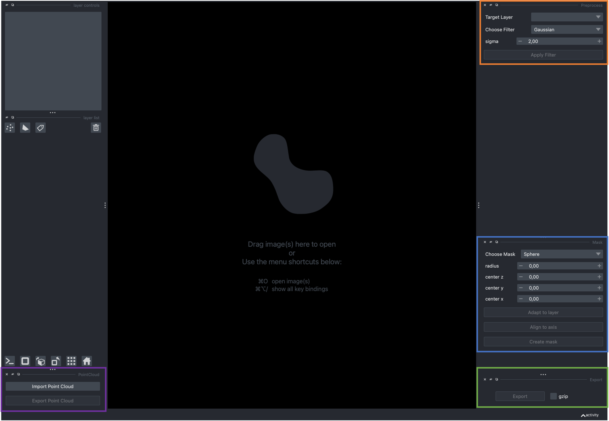
Simply drag and drop your data in into napari to import it (See tme.density.Density.from_file() for available formats). Clicking the Apply Filter button will apply the filter to the target layer and create a new layer on the left hand side. The name of the new layer is indicative of the filter type used. The figure below shows the target used throughout this guide after application of a bandpass filter as outlined in the Apply filters section.
{kind=link}
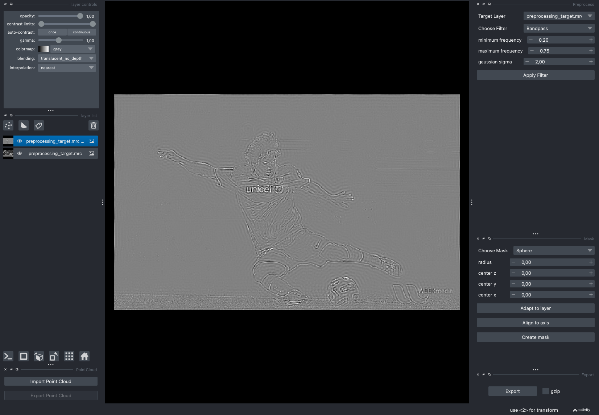
Note that the procedure is exactly the same for other targets. The figure below shows tomogram TS_037 (EMPIAR-10988, click here) [3] before (left) and after application of a Gaussian filter (right).
{kind=link}
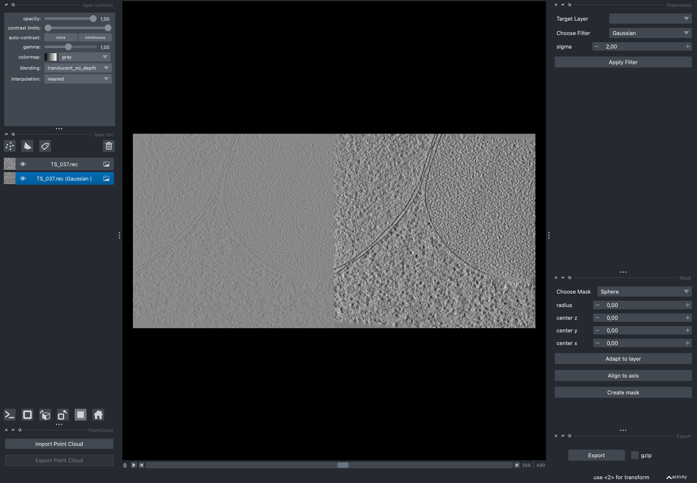
After selecting an adequate filter and parameter set the filtered data can be exported via the export button. Pressing the export button will open a separate window to determine the save location. If you applied a filter to the data, napari will also create a yaml file that contains the utilized parameters. Assuming your output is named filtered.mrc, the corresponding yaml file will be filtered.yaml.
For the tomogram example above, the yaml file will contain the following:
- gaussian_filter:
sigma: 2.0
The yaml file can be used in batch processing to apply the same filtering procedure to the new input other_file.mrc and write the output to other_file_processed.mrc for subsequent use.
preprocess.py \
-i other_file.mrc \
-y filtered.yml \
-o other_file_processed.mrc
The mask widget is operated anologously. In the following, we consider an averaged electron microscope map EMD-3228. We can increase the lower bound on the contrast in the layer controls widget and use the display mode toggle highlighted in blue, to obtain a more informative visualization of the map.
{kind=link}
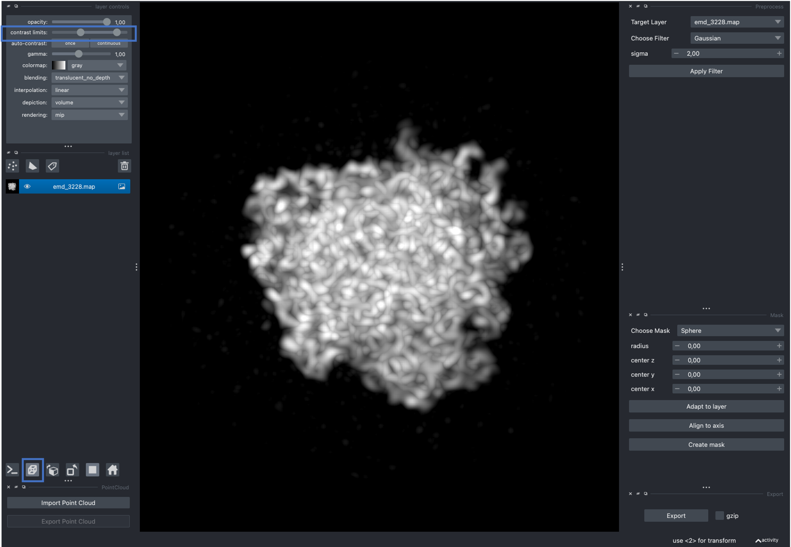
The dropdown menu allows users to choose from a variety of masks with a given set of parameter. The Adapy to layer button will determine initial mask parameters based on the data of the currently selected layer. Align to axis will rotate the axis of largest variation in the selected layer onto the z-Axis, which can simplify mask creation for cases whose initial positioning is suboptimal. Create mask will create a specified mask for the currently selected layer.
When clicking Adapy to layer followed by Create mask, we observe that the resulting sphere is excessively large. This is because EMD-3228 contains a fair amount of noisy unstructed density around the center structure. This can be assessed by reducing the lower bound on the contrast limit slider.
{kind=link}
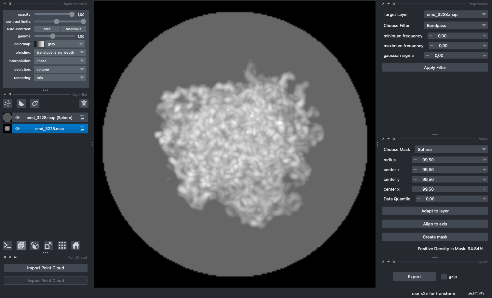
We can either adapt the mask manually, or make use of the Data Quantile feature. The Data Quantile allows us to only consider a given top percentage of the data for mask generation. In this case, 94.80 appeared to be a reasonable cutoff. Make sure to select the non-mask layer before clicking on Adapy to layer. The output is displayed below.
{kind=link}
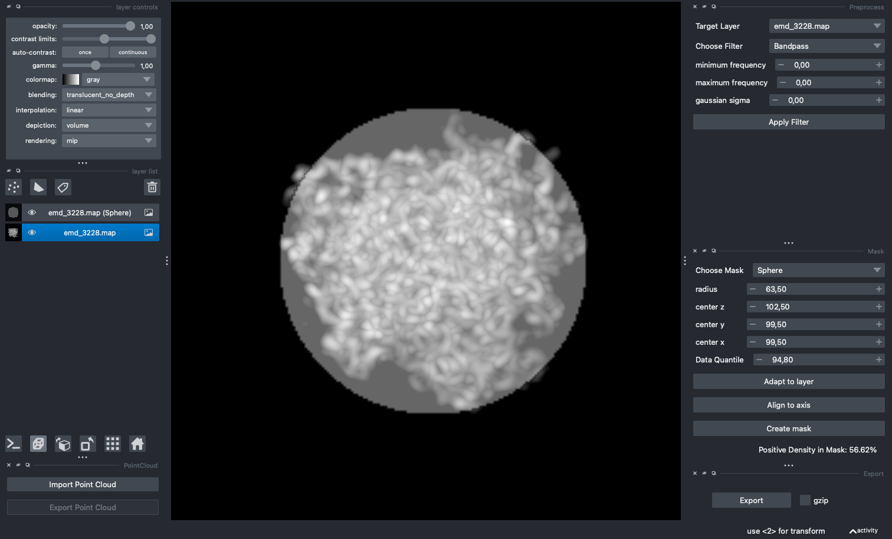
Albeit more reasonable, the mask now cuts-off some parts of the map. We can mitigate this by manually fine-tuning the parameters until the mask at least encapsulates the most important features of the map.
{kind=link}
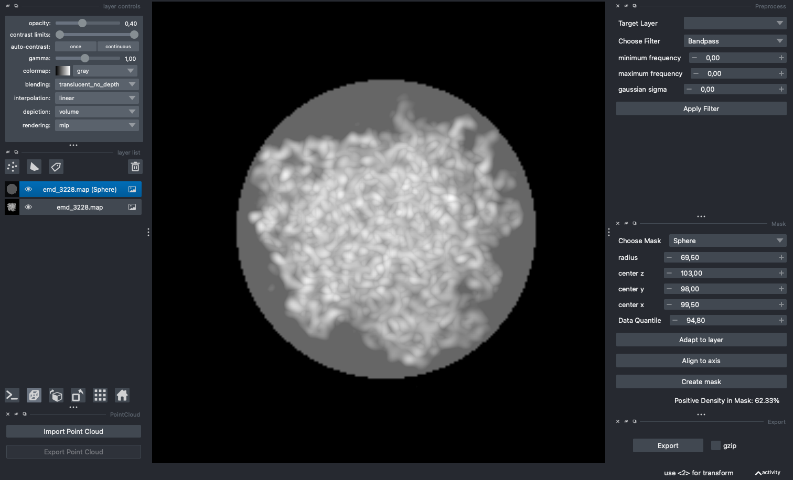
The generated masks can now be exported for subsequent use in template matching.
Finally, we can also use the viewer to determine the wedge mask specification. For this, drag and drop a CCP4/MRC file for which you would expect a missing wedge into viewer. Select and apply the Power Spectrum filter to visualize the missing wedge. You might need to switch the image axis using the widgets on the bottom left. Once the wedge is visible, enable axis using View > Axes > Axes visible. Head over to the mask widget and select wedge. The opening axis corresponds to the axis that runs through the void defined by the wedge, the tilt axis is the axis the plane is tilted over. For the data in the example below, a tilt range of (40, 40), tilt axis 2 and opening axis 0 appears sufficient. match_template.py follows the same conventions, as you will see in subsequent tutorials.
{kind=link}
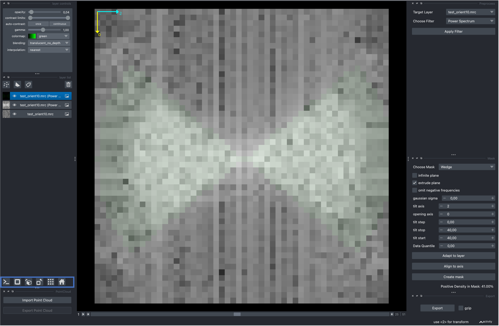
Note
Napari sometimes exits with a bus_error on MacOS systems. Usually its sufficient to reinstall napari and its dependencies, especially pyqt.
The tme.preprocessor.Preprocessor class defines a range of filters that are outlined on the Preprocessor page. tme.preprocessor.Preprocessor operates on numpy.ndarray instances, such as the tme.density.Density.data attribute of tme.density.Density instances. tme.matching_utils.create_mask() on the other hand can be used to define a variety of masks for template matching.
The following outlines the creation of an ellipsoidal mask and its subsequent smoothing. For further usage examples please have a look at the code attached to the figures in Filtering Use Cases and Mask Design.
In the following we are going to use tme.matching_utils.create_mask() to create an ellipsoid, in this case a sphere, with radius 15 as input. tme.matching_utils.create_mask() returns a numpy.ndarray object, which we use in turn to create a tme.density.Density instance. Note that by default, the instances attributes tme.density.Density.sampling_rate will be initialized to one unit per voxel, and the tme.density.Density.origin attribute to zero. We can write the created mask to disk using tme.density.Density.to_file().
from tme import Density
from tme.matching_utils import create_mask
mask = create_mask(
mask_type = "ellipse",
center = (25, 25, 25),
shape = (50, 50, 50),
radius = (15, 15, 15)
)
Density(mask).to_file("example.mrc")
In the following we will proceed with the example.mrc file we generated. However, you can adapt this to a file of your choice, as long as it can be read by tme.density.Density.from_file(). We can apply a Gaussian filter with standard deviation sigma using tme.preprocessor.Preprocessor.gaussian_filter and write the output to disk as example_gaussian_filter.mrc like so:
from tme import Density, Preprocessor
preprocessor = Preprocessor()
dens = Density.from_file("example.mrc")
out = dens.empty
out.data = preprocessor.gaussian_filter(
template = dens.data, sigma = 2
)
out.to_file("example_gaussian_filter.mrc")
You can visualize the output using your favourite macromolecular viewer. For simplicity, we are showing a maximum intensity projection. The left hand side shows the unfiltered example.mrc, while the right hand side displays the filtered example_gaussian_filter.mrc. The degree of smoothing depends on the value of the sigma parameter.
(Source code, png, hires.png, pdf)
{kind=link}
{kind=link}
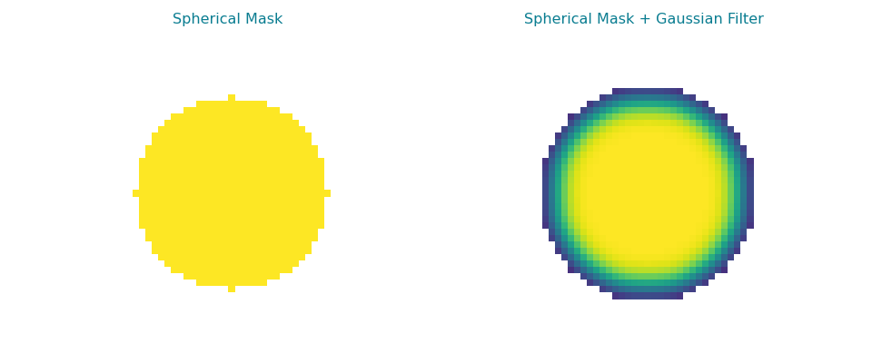
Mask creation and filter application using the API.#
tme.preprocessor.Preprocessor supports a range of other operations such as the creation of wedge masks. The following outlines the creation of a continuous wedge mask assuming an infinite plane using tme.preprocessor.Preprocessor.continuous_wedge_mask().
import numpy as np
from tme import Density, Preprocessor
preprocessor = Preprocessor()
mask = preprocessor.continuous_wedge_mask(
shape = (32,32,32),
opening_axis = 0,
tilt_axis = 2,
start_tilt = 40,
stop_tilt = 40,
# RELION assumes symmetric FFT
omit_negative_frequencies = False
)
Density(mask).to_file("wedge_mask.mrc")
By default, all Fourier operations in pytme assume the DC component to be at the origin of the array. To observe the typical wedge shape you have to shift the DC component of the mask to the array center, for instance by using numpy.fft.fftshift like so:
import numpy as np
mask_center = np.fft.fftshift(mask)
Density(mask_center).to_file("wedge_mask_centered.mrc")
Conclusion#
Following this guide, you have gained understand of data preprocessing within the context of template matching. Specifically:
Learned the background and implications of filtering.
Assessed how mask design shapes template matching scores.
Utilitzed preprocessing techniques from within the napari GUI and pytme’s API.
In the subsequent tutorial, you will learn how to put these lessons to use when template matching on biological data.